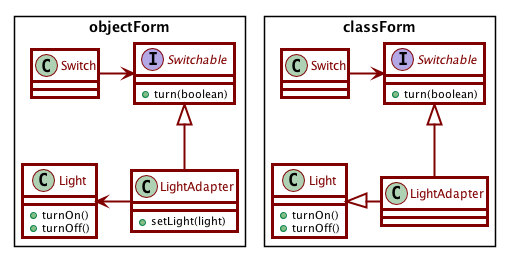

Video segment from: Pile’o’patterns
Proxy pattern allows two objects to communicate along a communications boundary, without knowing that the boundary exists.
Video segment from: Pattern apocalypse
The adapter pattern allows us to connect a client to a service without the two knowing about each other.

Video segment from: Pattern apocalypse
Bridge pattern is useful when a set of objects can be expressed via multiple inheritance hierarchies.
Example: Employees have different payment schedules and different payment classifications.
The Bridge pattern is essentially a “bunch of strategies”.
As time permits: